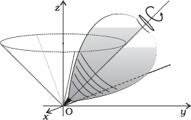
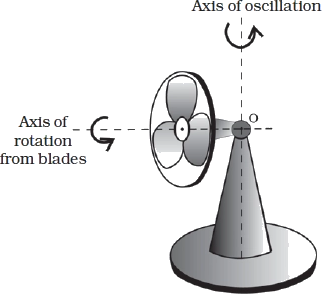
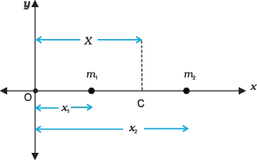
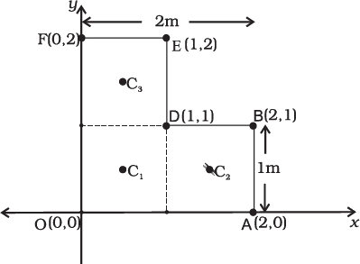

Particle (idealisation): Treat the body as a point mass with no size. Earlier motion studies often modelled even finite bodies using just one “particle”.
Limitation of particle model: Real bodies have finite size. For extended bodies, particle modelling can be inadequate since different parts can move differently.
Extended body: A real, finite-sized body. Can be treated as a system of particles.
Chapter approach: describe an extended body as a system of particles, and use the centre of mass to describe motion of the system as a whole.
Rigid body (idealisation): A body with a definite, unchanging shape ⇒ distances between every pair of particles in it stay constant.
Rigidity in reality: Perfect rigidity doesn’t exist (forces deform bodies). But if deformation is negligible, many objects can be treated as rigid (e.g. wheels, tops, steel beams, molecules, planets), ignoring warping/bending/vibration.
Exam tip: “Rigid body” is an approximation, not an absolutely true material property. In problems: ask “can deformation be neglected?” If yes → rigid-body methods are valid.
6.1.1 What kind of motion can a rigid body have?
(A) Pure translational motion
Example: Rectangular block sliding down an inclined plane without sidewise motion (treat as rigid).
Pure translational motion: At any instant, all particles have the same velocity (same magnitude + direction).
Test for pure translation: pick any two points (say P1, P2). If their velocity vectors are always identical at the same instant → pure translation.
(B) Motion that is not pure translation: rolling case
Example: Solid cylinder rolling down an inclined plane.It moves down the plane (so there’s translation), but all particles do not share the same velocity at an instant ⇒ motion is not pure translation. It is translation + extra component (rotation).
In rolling, different points (P1, P2, P3, P4) have different velocities at the same time.
Rolling without slipping (key observation): The point of contact with the ground has zero velocity at that instant (e.g. point P3).
Common mistake: “Whole cylinder has velocity v.” Nope. Only the centre of mass has one translational velocity; other points have different velocities, and the contact point can be instantaneously at rest (no-slip).
(C) Pure rotation about a fixed axis
To get “only rotation”, constrain the rigid body so it cannot translate. A common way: fix it along a straight line. Then the only possible motion is rotation.
Axis of rotation (fixed axis): The fixed straight line about which the body rotates when translation is prevented.
Examples of rotation about a fixed axis: ceiling fan, potter’s wheel, giant wheel, merry-go-round.
Geometrical description (fixed-axis rotation): Each particle moves in a circle in a plane perpendicular to the axis, with the circle’s centre on the axis.
Detailed description (figure with z-axis):
Consider a rigid body rotating about a fixed axis (e.g. the z-axis).
Pick a particle P1 at perpendicular distance r1 from the axis:
P1 moves in a circle of radius r1.
Circle centre C1 lies on the axis.
The circle lies in a plane perpendicular to the axis.
Another particle P2 at distance r2 moves similarly: circle of radius r2, centre C2 on the axis, plane perpendicular to axis.
Circles of different particles may be in different planes, but each plane is perpendicular to the axis.
Any particle on the axis (e.g. P3) has r = 0 ⇒ remains stationary during rotation (axis is fixed).
Exam tip: “Radius of circular path” = perpendicular distance from the axis (not distance measured along the body).
(D) Rotation with a non-fixed axis: precession and oscillating axis
Some rotations have an axis that is not fixed.Example 1: Spinning top in place (assume no slipping ⇒ no translation).
Precession: The axis of rotation of a spinning body (e.g. top) moves around the vertical through the contact point, so the axis sweeps a cone.
Top spinning in place: the contact point with the ground is fixed, and the instantaneous rotation axis passes through this fixed point.

Example 2: Oscillating table fan / pedestal fan
Pivot point O is fixed.
The blades execute rotational motion.
The axis of rotation of the blades is itself oscillating (direction changes with time), unlike fixed-axis rotation.

Rotational Motion: Fixed Axis vs Moving Axis; Translation + Rotation
Rotation about a fixed axis (simplest case): rigid body turns about one fixed straight line in space (= axis of rotation), e.g. ceiling fan.Rotation about a fixed point (more general): only one point is fixed; the axis can move but always passes through that fixed point, e.g. a top; pedestal fan whose axis oscillates sideways about a vertical line through pivot point O.
In this chapter (unless said otherwise): treat rotational motion as rotation about a fixed axis only.
Rolling Motion as Translation + Rotation
Rolling motion (e.g. cylinder rolling down an incline) = mix of:
Translation of the whole body, and
Rotation about a (fixed) axis (for the rotational part).
Pure Translation vs Translation + Rotation (Interpretation of Fig. 6.6a, 6.6b)
Same rigid body, same translational path, but two possible motions:
Pure translation (Fig. 6.6a): every point has the same velocity at any instant; orientation doesn’t change.
Translation + rotation (Fig. 6.6b): different points usually have different velocities at the same instant; orientation changes.
Let O = centre of mass (defined next) and P = any other point on the body. Positions at three instants: O1, O2, O3 and P1, P2, P3.
Path traced by O = body’s translational trajectory (Tr1, Tr2 in figure).
Pure translation: velocities of points like O and P are equal at any instant; line OP keeps same direction, so α1 = α2 = α3.
Translation + rotation: velocities of O and P differ at the same instant; orientation changes, so generally α1, α2, α3 are all different.
Exam trap: “Same translational trajectory” ≠ “pure translation.” In translation + rotation, COM can follow the same path, but the body still rotates → point velocities differ + orientation changes.
Centre of Mass (COM)
Centre of mass (COM) = the point whose position is the mass-weighted mean of all particle positions.
COM of Two Particles on a Line (x-axis)
Take the line joining the two particles as the x-axis. Positions from origin O: x1, x2; masses: m1, m2. COM is at distance X from O:

Two-particle COM (1D): $X=\frac{m_1 x_1+m_2 x_2}{m_1+m_2}$X: x-coordinate of COM from origin Ox1, x2: particle x-coordinates from Om1, m2: particle masses
COM is the mass-weighted mean of x1, x2.
Special case (equal masses): If m1 = m2 = m, then:
For two equal masses, COM is exactly midway between them.
COM of n Particles on a Line (1D)
For n particles with masses m1, m2, …, mn placed on x-axis at x1, x2, …, xn:
n-particle COM (1D):
$X=\frac{m_1 x_1+m_2 x_2+\ldots+m_n x_n}{m_1+m_2+\ldots+m_n}=\frac{\sum_{t=1}^n m_t x_t}{\sum_{t=1}^n m_t}=\frac{\sum m_t x_t}{\sum m_t}$
X: COM x-coordinate (from the same origin as all xi)mi: mass of i-th particlexi: x-coordinate of i-th particle∑ (sigma): sum over particles i = 1 to n
Total mass: $\sum m_i=M$M: total mass of the systemmi: masses of individual particles
Common mistake: mixing origins. All xi and X must be measured from the same origin.
COM of Three Particles in a Plane (2D)
Three particles in a plane: (x1, y1), (x2, y2), (x3, y3) with masses m1, m2, m3. COM is at (X, Y):
Three-particle COM (2D):$\mathrm{X}=\frac{\mathrm{m}_1 \mathrm{x}_1+\mathrm{m}_2 \mathrm{x}_2+\mathrm{m}_3 \mathrm{x}_3}{\mathrm{~m}_1+\mathrm{m}_2+\mathrm{m}_3}$$\mathrm{Y}=\frac{\mathrm{m}_1 \mathrm{y}_1+\mathrm{m}_2 \mathrm{y}_2+\mathrm{m}_3 \mathrm{y}_3}{\mathrm{~m}_1+\mathrm{m}_2+\mathrm{m}_3}$X, Y: COM coordinatesxi, yi: coordinates of i-th particlemi: masses
Special case (three equal masses): If m = m1 = m2 = m3, then:
For three equal masses, COM = centroid of the triangle formed.
COM of n Particles in Space (3D)
General case: n particles in space. COM is at (X, Y, Z):
n-particle COM (3D components):
$X = \dfrac{\sum_i m_i x_i}{M}$
$Y = \dfrac{\sum_i m_i y_i}{M}$
$Z = \dfrac{\sum_i m_i z_i}{M}$
xi, yi, zi: coordinates of i-th particlemi: mass of i-th particleM: total mass, $M = \sum_i m_i$i: index from 1 to n
Vector Form of COM
Write positions using vectors (for particles + COM):
Position vectors: $\vec{r}_i = x_i \hat{i} + y_i \hat{j} + z_i \hat{k}$, and $\vec{R} = X \hat{i} + Y \hat{j} + Z \hat{k}$$\vec{r}_i$: position vector of $i$-th particle: position vector of i-th particle$\vec{R}$: position vector of COM: position vector of COM$\hat{i}, \hat{j}, \hat{k}$: unit vectors along $x, y, z$: unit vectors along x, y, z
COM (vector equation): $M\vec{R} = \sum_i m_i \vec{r}_i$M: total mass$\vec{R}$: COM position vectormi: particle masses$\vec{r}_i$: particle position vectors∑: vector sum (sum of vectors)
COM-origin condition: $\sum_i m_i \vec{r}_i = \vec{0}$ zero vector
Rigid Body as a System of Particles (Applicability of COM Equations)
A rigid body (e.g. metre stick, flywheel) can be treated as a system of closely packed particles.So the COM relations (Eqs. 6.4a–6.4d) apply to rigid bodies too.
In a rigid body, particles (atoms/molecules) are extremely many → direct summation in COM formulas is not practically possible (leads to more advanced methods later).
Centre of Mass (CM) of a Continuous Body
Continuous mass distribution: if the body is huge compared to inter-atomic spacing, treat mass as “spread out”. Split into tiny bits Δm1, Δm2, …, Δmn, where the i-th bit sits near (xi, yi, zi).
Discrete approximation (many small mass elements)
CM coords (after chopping into small pieces):X = (Σ Δmi xi)/(Σ Δmi)Y = (Σ Δmi yi)/(Σ Δmi)Z = (Σ Δmi zi)/(Σ Δmi)Δmi = small mass element(xi, yi, zi) = coords of that element
As n ↑ and each Δmi ↓, these sums slide toward the exact CM of the continuous body.
Limit to integrals (exact CM for continuous body)
With infinitely many infinitesimal bits, swap sums → integrals:
Σ Δmi → ∫ dm = M (total mass)
Σ (Δmi xi) → ∫ x dm
Σ (Δmi yi) → ∫ y dm
Σ (Δmi zi) → ∫ z dm
CM coords for a continuous body :X = (1/M) ∫ x dmY = (1/M) ∫ y dmZ = (1/M) ∫ z dmM = total mass of the bodydm = infinitesimal mass elementx, y, z = coords of dm
Vector CM form :R = (1/M) ∫ r dmR = position vector of the centre of massr = position vector of mass element dmM = total mass
Choosing the CM as origin
If we put the origin at the CM, then R = 0. That means the “first moments” about the origin must cancel to zero.
Condition for CM at origin :∫ r dm = 0Equivalently (components):∫ x dm = 0, ∫ y dm = 0, ∫ z dm = 0r = (x, y, z) position vector of dmdm = mass element
Exam tip: “Origin at CM” ≠ “origin at geometric centre”. They match only if symmetry/uniformity makes it true.
Centre of Mass of Homogeneous Regular Bodies (Symmetry Method)
Homogeneous body: mass density is the same everywhere (uniformly distributed).
For homogeneous regular shapes (rings, discs, spheres, rods, etc.), symmetry usually pins the CM at the geometric centre.
Thin rod: reflection symmetry argument
Thin rod: width/breadth or radius « length. Put origin at the rod’s geometric centre; take x-axis along the length.
By reflection symmetry: for every dm at x, there’s an equal dm at −x.
Each pair adds x dm + (−x) dm = 0 to ∫ x dm, so overall ∫ x dm = 0.
The point where the first-moment integral is zero is the CM → CM is at the geometric centre.
Generalisation to rings, discs, spheres, thick rods
For a homogeneous ring/disc/sphere/thick rod (circular or rectangular cross-section), the geometric centre is a reflection-symmetry point: for every dm at (x, y, z), there’s an equal dm at (−x, −y, −z).
∫ x dm = ∫ y dm = ∫ z dm = 0 (with origin at geometric centre).
CM = geometric centre for these homogeneous symmetric bodies.
Common mistake: saying “CM = geometric centre” for non-uniform bodies or shapes without the needed symmetry (then you must use the CM formulas).
Worked Examples on Centre of Mass
Example 6.1:
Find the centre of mass of three particles at the vertices of an
equilateral triangle. The masses of the particles are 100g, 150g, and 200g respectively. Each side of the equilateral triangle is 0.5m long.
Given: Equilateral triangle, side = 0.5 m. Masses: 100 g at O, 150 g at A, 200 g at B.
Pick axes so coordinates are:
O = (0, 0)
A = (0.5, 0)
B = (0.25, 0.25√3)
CM (discrete particles):X = (m1x1 + m2x2 + m3x3)/(m1 + m2 + m3)Y = (m1y1 + m2y2 + m3y3)/(m1 + m2 + m3)mk = mass of k-th particle; (xk, yk) = its coordinates
Method (strips + symmetry): Split triangular lamina ΔLMN into thin strips parallel to base MN.
Each strip is symmetric about its midpoint ⇒ strip’s CM is at its midpoint.
Midpoints of strips parallel to MN lie along the median LP ⇒ whole triangle’s CM lies on LP.
Likewise, using strips parallel to other sides ⇒ CM also lies on medians MQ and NR.
Therefore CM is at the concurrence point of medians = the centroid G.
Result: A uniform triangular lamina has its CM at the centroid (intersection of medians).
Example : Centre of mass of a uniform L-shaped lamina

Given: Uniform L-shaped lamina, total mass = 3 kg. Dimensions let us treat it as 3 identical square plates, each side 1 m.Uniform ⇒ each 1 m × 1 m square has mass = 1 kg.
Choose X- and Y-axes as in the figure; by symmetry each square’s CM is at its geometric centre.
Centres of the 3 squares:
C1 = (1/2, 1/2)
C2 = (3/2, 1/2)
C3 = (1/2, 3/2)
Model as 3 point masses (each 1 kg) at C1, C2, C3.
CM of composite body (discrete equivalent):X = (Σ mixi)/(Σ mi), Y = (Σ miyi)/(Σ mi)mi = mass of component i placed at (xi, yi)
CM of the L-shape = (5/6 m, 5/6 m) and it lies on line OD.You can predict this: the L-shape is symmetric about OD ⇒ equal “balance” on both sides.
Exam tip: For composite laminae: split into simple shapes with known centroids; use mass (or area if uniform thickness/density) as the weights in the CM formula.
6.3 Motion of Centre of Mass
System of n particles (total mass M) with position vectors r1, r2, …, rn: the centre of mass (COM) position vector R is the mass-weighted average of the particle positions.
Centre of mass (vector form) :M R = m1 r1 + m2 r2 + … + mn rn = Σ mi riM: total mass of system, M = Σ miR: position vector of COMmi: mass of i-th particleri: position vector of i-th particle
Centre of mass velocity
Differentiate Eq. (6.7) w.r.t. time (masses constant ⇒ treat mi as constants):
COM velocity relation (Eq. 6.8):M V = m1 v1 + m2 v2 + … + mn vn = Σ mi viV: COM velocity, V = dR/dtvi: velocity of i-th particle, vi = dri/dtM: total mass (constant here)
Assumption used: m1, m2, … are constant in time. So, d(miri)/dt = mi dri/dt.
Centre of mass acceleration
Differentiate Eq. w.r.t. time:
COM acceleration relation :M A = m1 a1 + m2 a2 + … + mn an = Σ mi aiA: COM acceleration, A = dV/dtai: acceleration of i-th particle, ai = dvi/dt
Newton’s second law for a system of particles (force on COM)
Apply Newton’s 2nd law to each particle:
Particle 1: F1 = m1a1
Particle 2: F2 = m2a2
… up to particle n.
Substitute into Eq. (6.9):
$M \mathbf{A}=m_1 \mathbf{a}_1+m_2 \mathbf{a}_2+\ldots+m_n \mathbf{a}_n$
Sum of forces form (Eq. 6.10):M A = F1 + F2 + … + Fn = Σ FiFi: net force on the i-th particle (vector sum of all forces on that particle)MA: total mass × COM acceleration
External vs internal forces; why internal forces cancel
Each Fiincludes:
External forces: exerted on particle i by bodies outside the system.
Internal forces: exerted on particle i by other particles in the same system.
By Newton’s 3rd law, internal forces come in equal-and-opposite pairs ⇒ total internal contribution to ΣFi is zero. So, COM motion is set only by external forces.
Equation of motion of COM :M A = FextFext: vector sum of all external forces on the systemA: COM acceleration
Physical meaning of Eq. (6.11): The COM moves as if (i) the whole mass M were concentrated at the COM, and (ii) all external forces act at the COM.
To find COM motion, you need no internal-force details — only external forces.
Applicability: rigid bodies and systems with internal motion
Eq. (6.11) $M \mathbf{A}=\mathbf{F}_{e x t}$ is fully general (doesn’t depend on what the system is):
Many particles with arbitrary internal motion
Rigid body in pure translation
Rigid body in translation + rotation
This explains why we can treat an extended body like a single particle for translation: use the COM as the effective point where total mass and external forces act to get the translational (COM) motion.
Earlier mechanics problems often (quietly) assumed rotation/internal motion was zero or negligible. COM dynamics lets you separate translation (COM) from rotation/internal motion without that assumption.
Illustration: exploding projectile (Fig. 6.12)
Projectile follows a parabolic path, then explodes mid-air into fragments:
Explosion forces are internal ⇒ they don’t change COM motion.
External force is gravity (weight) — same before + after explosion.
The COM of all fragments keeps moving on the same parabolic trajectory the projectile would follow with no explosion, because Fext is unchanged and internal forces cancel.
6.4 Linear Momentum of a System of Particles
Momentum of a single particle and Newton’s second law
Linear momentum (single particle)p = m vp: particle’s linear momentumm: particle massv: particle velocity
Newton’s second law (single particle, symbolic)F = dp/dtF: net force on the particlep: particle momentumt: time
Total (system) linear momentum: definition
System of n particles with masses m1, m2, …, mn and velocities v1, v2, …, vn:
Total linear momentum of a systemP = p1 + p2 + … + pn = Σ pi = m1v1 + m2v2 + … + mnvn = Σ miviP: total linear momentum of the systempi: momentum of particle i
Momentum–COM velocity relationP = M VP: total momentum of systemM: total mass of systemV: centre-of-mass (COM) velocity
Meaning: total momentum = “total mass × COM velocity”. Still true even if particles jiggle/move internally.
Newton’s second law for a system (momentum form)
Differentiate Eq. (6.15) P = M V, w.r.t. time (take M constant):
Rate of change of system momentumdP/dt = d(MV)/dt = M AA: COM acceleration
MA = Fext, so:
Newton’s second law for a system of particles :Fext = dP/dtFext: net external force on the systemP: total momentum of the system
Newton’s 2nd law for a whole system: only external forces can change total momentum.
Law of conservation of linear momentum (system)
If net external force is zero:
Conservation of total linear momentum (Eq. 6.18a):Fext = 0 ⇒ dP/dt = 0 ⇒ P = constantP: total system momentum (constant when Fext=0)
Since P = MV (Eq. 6.15), if Fext=0 and M is constant, then V (COM velocity) stays constant.Assumption throughout: total mass of the system is constant.
Don’t mix this up: Fext=0 ⇒ P is constant. Internal forces may change individual momenta, but can’t change total P.
Conservation of Linear Momentum and Centre of Mass Motion
If total external force on a system is zero, the centre of mass (CM) moves with constant velocity → uniform straight-line motion like a free particle, even if the individual particles move in messy paths.
Component form of constant total momentum (same idea as the vector conservation law when net external force = 0):Px = c1, Py = c2, Pz = c3Px, Py, Pz: x-, y-, z-components of total momentum Pc1, c2, c3: constants (each component stays fixed)
Example: Radioactive decay of a moving radium nucleus
A moving radium (Ra) nucleus decays into a radon (Rn) nucleus + an alpha particle (He nucleus).
Decay forces are internal; external forces negligible.
So total linear momentum is the same before & after decay (momentum conserved).
The two products shoot off in different directions so that their CM keeps following the same path as the original moving Ra nucleus.
Centre of Mass frame vs Laboratory frame (decay viewpoint)
Lots of system problems get easier in the centre-of-mass frame vs the lab frame.
Laboratory frame: CM moves uniformly; each product’s velocity = CM motion + motion relative to CM → paths look more complicated.
CM frame (CM at rest): decay looks super clean: products move back-to-back while the CM stays at rest.
Example: Binary (double) stars
Binary stars are common in astronomy.
With no external forces, the CM of the two-star system moves like a free particle (uniform straight line).
In an external (lab-like) frame, the star paths can look complicated.
In the CM frame, CM is at rest and the stars do circular motion about the CM.
If the two stars have equal mass, they must always be diametrically opposite (ends of a diameter through the CM).
Handy way to split system motion:
(i) uniform straight-line motion of the centre of mass, and
(ii) motion of parts of the system about the centre of mass (e.g. circular orbits).
This “separate CM + relative motion” trick is powerful for understanding/solving system-of-particles problems.
If net external force is zero: don’t confuse “complicated particle trajectories” with “complicated CM motion”. The CM still moves like a free particle (straight line, constant speed).
Vector Product of Two Vectors (Cross Product)
Vector product / cross product of vectors a and b is itself a vector.Used a lot in rotation stuff: moment (torque), angular momentum, etc.
Definition of vector product
Vector product of a and b is a vector c such that:
Magnitude: |c| = ab sinθ, where a = |a|, b = |b|, θ = angle between a and b.
Direction: c is perpendicular to the plane containing a and b.
Sense (right-handed screw rule): Put a right-handed screw with its head in the plane of a & b and axis ⟂ to the plane. Turn from a → b ⇒ the tip moves along direction of c.
Cross product (magnitude form):|a × b| = ab sinθa: magnitude of vector ab: magnitude of vector bθ: smaller angle between a and b
Right-hand rules for direction
Right-handed screw rule: rotate from a to b; screw advances in direction of a × b.
Right-hand curl rule (alt): curl fingers from a to b (around a line ⟂ to their plane); thumb gives a × b.
Simpler right-hand rule: open right palm, curl fingers a → b; thumb points along a × b.
Between a and b there are two angles: θ and (360° − θ). For right-hand rules, always rotate through the smaller angle (< 180°), i.e. θ.
Terminology: “cross product”
Vector product is written with the cross symbol (×) ⇒ called cross product.
Non-commutativity (order matters)
Unlike dot product, cross product is not commutative.
Anti-commutative property:a × b = −(b × a)a, b: vectors
|a × b| and |b × a| have same magnitude = ab sinθ, and both are ⟂ to plane of a and b.
But directions are opposite (rotation reverses: a → b vs b → a).
Behaviour under reflection (mirror image)
Under reflection (plane mirror image): x → −x, y → −y, z → −z.So each vector flips sign: a → −a, b → −b.Then:(a × b) → (−a) × (−b) = a × bSo a × b does NOT change sign under reflection.
Don’t assume every vector expression flips under reflection: a and b reverse, but a × b stays the same since both reverse.
Distributive property over vector addition
Both dot and cross products distribute over addition.
Dot product distributive law:a · (b + c) = a · b + a · ca, b, c: vectors
Cross product distributive law:a × (b + c) = a × b + a × ca, b, c: vectors
Component form: elementary cross products (start)
To write c = a × b in components, we first use basic (elementary) cross product facts.
Reason: |a × a| = a·a·sin0° = a2·0 = 0 ⇒ cross product is the null vector.
Elementary Cross Products of Unit Vectors; Determinant Form of Cross Product
Standard unit vectors:î, ĵ, k̂ are mutually perpendicular unit vectors along x-, y-, z-axes.
Cross product of a unit vector with itself
î × î = 0, ĵ × ĵ = 0, k̂ × k̂ = 00: zero vector (magnitude 0).
Any vector crossed with itself = zero vector (angle = 0°):|a × a| = |a||a|sin0° = 0
Elementary cross products (right-hand screw rule)
î × ĵ = k̂î, ĵ, k̂: unit vectors along x, y, z respectively.
Why î × ĵ = k̂:|î × ĵ| = |î||ĵ|sin90° = 1·1·1 = 1 ⇒ result is a unit vector.Direction ⟂ to plane of î and ĵ (xy-plane) + right-hand screw rule ⇒ +z direction ⇒ k̂.
ĵ × k̂ = îk̂ × î = ĵ
Cyclic order ⇒ + sign: î, ĵ, k̂ cyclic ⇒ î × ĵ = k̂, ĵ × k̂ = î, k̂ × î = ĵ.Reverse (non-cyclic) ⇒ − sign.
Commutation (anti-commutative property) of cross product
ĵ × î = −k̂k̂ × ĵ = −îî × k̂ = −ĵ
Cross product ≠ dot product: a × b ≠ b × a. Actually b × a = −(a × b).
Cross product of general vectors in component form
Let a = axî + ayĵ + azk̂ and b = bxî + byĵ + bzk̂.Use distributive law + unit-vector cross products ⇒ expand into î, ĵ, k̂ components.
a × b = (aybz − azby)î + (azbx − axbz)ĵ + (axby − aybx)k̂ax, ay, az: components of abx, by, bz: components of b
Determinant form (easy-to-remember representation)
a × b =
| î ĵ k̂ |
| ax ay az || bx by bz |
î, ĵ, k̂: unit vectors in the first row
When expanding determinant: watch signs in cofactor expansion along first row: + for î, − for ĵ, + for k̂.
Example : Find the scalar and vector
products of two vectors. $\mathbf{a}=(3 \hat{\mathbf{i}}-4 \hat{\mathbf{j}}+5 \hat{\mathbf{k}})$ and $b=(-2 \hat{\mathbf{i}}+\hat{\mathbf{j}}+3 \hat{\mathbf{k}})$
Given: a = 3î − 4ĵ + 5k̂, b = 2î − 1ĵ + 3k̂.
Scalar product (dot product):a · b = axbx + ayby + azbza · b is a scalar (number)
Compute a · b:a · b = (3)(2) + (−4)(−1) + (5)(3)= 6 + 4 + 15 = 25
Vector product (cross product) via determinant:a × b =| î ĵ k̂ || 3 −4 5 || 2 −1 3 |
v = ωrv: magnitude of linear velocity (speed) of the particle.ω: angular velocity (magnitude).r: radius of circular path (perpendicular distance from axis).
At a given instant, the same ω applies to all particles of a rigid body rotating about a fixed axis.
For i-th particle: vi = ω rivi: linear speed of i-th particle at that instant.ri: perpendicular distance of i-th particle from the axis.ω: common angular velocity of the rigid body.i = 1 to n, where n is total number of particles.
Particles on the axis: r = 0 ⇒ v = ωr = 0 ⇒ particles on the axis are at rest (fits with “fixed axis”).
Characterisation of translation vs rotation
Pure translation: all parts have the same linear velocity at any instant.
Pure rotation about a fixed axis: all parts have the same angular velocity at any instant.
Equivalently: each particle moves in a circle in a plane ⟂ to the axis, with centre on the axis.
Angular velocity as a vector; right-hand screw rule
Even though ω looks “scalar” in ω = dθ/dt, angular velocity is a vector.
For rotation about a fixed axis, ω points along the axis of rotation.
Direction by right-handed screw rule: if a right-handed screw turns with the body, the direction it advances = direction of ω.
Reverse the sense of rotation (clockwise ↔ anticlockwise) ⇒ ω reverses.
Magnitude of angular velocity vector: |ω| = dθ/dt|ω|: magnitude of angular velocity vector.
Vector relation between linear velocity and angular velocity
Pick origin O on the axis. For particle at P, position vector r = OP. Then linear velocity comes from cross product:
v = ω × rv: instantaneous linear velocity vector.ω: angular velocity vector (along fixed axis).r: position vector from an origin on the axis.
From v = ω × r (directions):
v ⟂ ω and v ⟂ r.
v is along the tangent to the circle at that point.
Don’t mix up r in v = ωr with r in v = ω × r: for speed, use perpendicular distance from axis; for vector form, use the position vector from an origin on the axis.
Systems of Particles and Rotational Motion
Linear velocity in pure rotation: v = ω × r
For a particle at position r in a rigid body rotating with angular velocity ω, instantaneous linear velocity is v = ω × r. The velocity is tangential to the circular path about the axis (or fixed point).
Let the rotation axis be the z-axis. For a particle at point P, position vector from origin O:
r = OP = OC + CP
C is the foot of the perpendicular from P to the axis ⇒ OC is along the axis, CP is ⟂ to the axis.
Then
ω × r = ω × OP = ω × (OC + CP)
But ω × OC = 0 since ω ∥ OC (parallel vectors ⇒ zero cross product). Hence:
ω × r = ω × CP
ω × CP is ⟂ to both ω (axis direction) and CP (radius). So it points along the tangent at P ⇒ gives the direction of linear velocity.
Magnitude: since ω ⟂ CP,
|ω × CP| = ω·(CP)
Call CP as r⊥ (perpendicular distance from axis), not just r. Thus:
|ω × r| = ω r⊥
So linear velocity at P has magnitude v = ω r⊥ and is tangential.
v = ω × r (Eq. 6.20)
v = linear velocity vector of the particle
ω = angular velocity vector of rotation
r = position vector of the particle from the origin (fixed point or any chosen origin)
Eq. (6.20) also works for rotation about a fixed point (not only a fixed axis), e.g. a spinning top. Then r is from that fixed point to the particle.
About the angular velocity vector ω:
Rotation about a fixed axis: direction of ω stays constant; magnitude may change.
General rotation: both magnitude and direction of ω can change with time.
Angular acceleration
Angular acceleration α = time rate of change of angular velocity ω (just like linear acceleration is rate of change of linear velocity).
α = dω/dt
α = angular acceleration vector
ω = angular velocity vector
t = time
If axis is fixed: direction of ω is fixed ⇒ direction of α is also fixed. Then vector form becomes scalar:
α = dω/dt (scalar, fixed axis)
α = signed angular acceleration about the fixed axisω = signed angular speed about the fixed axis
Careful: with a fixed axis, ω may change in magnitude but not direction. In general 3D rotation, direction can change too → treat ω and α as vectors unless “fixed axis” is clearly stated.
Torque and Angular Momentum
Two big rotational quantities: torque and angular momentum.
Both use vector (cross) products.
Both are key for rotation of particle systems + rigid bodies.
Moment of force (Torque)
Rigid body motion = translation + rotation.If the body is fixed at a point/along a line → pure rotation only.
Rotational analogue of force:
Translation: force → linear acceleration.
Rotation: not just force size, but also where + how it’s applied matters.
Door example: push at hinges → no rotation; push at outer edge, ⟂ to door → max effect.
This “rotational effectiveness” = moment of force = torque (also called couple).
Definition (single particle): force F acts at point P, with position vector r from origin O. Torque about O:
τ = r × F
τ = torque about origin O (vector)
r = position vector of point of application from O
F = force vector
Direction of torque:
τ ⟂ to the plane containing r and F.
Direction from right-handed screw rule (right-hand rule for cross products).
Magnitude:
|τ| = r F sinθ
r = |OP|
F = magnitude of force
θ = angle between r and F
Equivalent forms (use lever arm or perpendicular component):
|τ| = r⊥ F (Eq. 6.24b)
r⊥ = perpendicular distance of line of action of F from origin
r⊥ = r sinθ
F = magnitude of force
|τ| = r F⊥ (Eq. 6.24c)
r = magnitude of position vector
F⊥ = component of F ⟂ r
F⊥ = F sinθ
When torque is zero:τ = 0 if
(i) r = 0
(ii) F = 0
(iii) θ = 0° or 180°
So torque vanishes if force is zero, or if the line of action passes through the origin (no lever arm).
Dimensions + SI unit:
Dimensions: M L2 T-2
SI unit: N m (newton metre)
Torque has same dimensions as work/energy, but it’s not the same: torque is a vector, work is a scalar.
Angular momentum of a particle
Angular momentum is the rotational analogue of linear momentum, just like torque is the rotational analogue of force.
Angular momentum is also defined using a vector product; also called the moment of (linear) momentum.
For a particle: mass m, linear momentum p, position r from origin O. Angular momentum l about O:
l = r × p (Eq. 6.25a)
l = angular momentum about origin O (vector)
r = position vector from O
p = linear momentum vector (p = mv)
Magnitude:
|l| = r p sinθ (Eq. 6.26a)
r = magnitude of position vector
p = magnitude of linear momentum
θ = angle between r and p
Equivalent forms:
|l| = r⊥ p
r⊥ = perpendicular distance of the directional line of p from origin
r⊥ = r sinθ
p = magnitude of linear momentum
|l| = r p⊥
r = magnitude of position vector
p⊥ = component of p ⟂ r
p⊥ = p sinθ
When angular momentum is zero: l = 0 if
(i) p = 0
(ii) r = 0
(iii) directional line of p passes through origin (i.e. θ = 0° or 180°)
For both torque and angular momentum, the “lever arm” is r⊥: perpendicular distance from origin to the line of action (of F for torque, of p for angular momentum). If that line passes through origin → quantity is zero even if F or p ≠ 0.
Moment of Force (Torque) and Angular Momentum: Fundamental Relation
Angular momentum (single particle): particle at position vector r with linear momentum p → angular momentum about origin:l = r × p
Torque (moment of a force) about the origin: force F on a particle at position vector r → torque:τ = r × F
Derivation of the rotational analogue of Newton’s second law (single particle)
Start with angular momentum:l = r × pDifferentiate w.r.t. time:dl/dt = d(r × p)/dtUse product rule for cross products:d(r × p)/dt = (dr/dt) × p + r × (dp/dt)Now use:
v = dr/dt
p = m v (particle of constant mass m)
First term:
(dr/dt) × p = v × (m v) = m (v × v) = 0 (cross product of parallel vectors = 0).Also (Newton’s 2nd law in translation):dp/dt = FSo:dl/dt = r × F = τ
τ = dl/dt (Eq. 6.27)
τ: torque about the chosen origin
l: angular momentum about the same origin
t: time
Meaning of Eq. (6.27): time rate of change of angular momentum = torque acting on the particle.This is the rotational analogue of F = dp/dt.
τ = dl/dt is always about a specified point (origin). Torque and angular momentum must be taken about the same point.
Torque and Angular Momentum for a System of Particles
Total angular momentum of a system
For a system of n particles, angular momentum about a chosen origin = vector sum of each particle’s angular momentum.
Angular momentum of the ith particle:li = ri × pi
ri: position vector of the ith particle from the chosen origin
pi = mivi: linear momentum (mi mass, vi velocity)
Total angular momentum of the system:
L = Σ li = Σ (ri × pi) (Eq. 6.25b)L: total angular momentum of system about chosen originli: angular momentum of ith particle about same originri: position vector of ith particle from originpi: linear momentum of ith particleΣ: sum over i = 1 to n
Eq. (6.25b) = the generalisation of single-particle angular momentum to a whole system.
Time rate of change of total angular momentum and torque
Differentiate total angular momentum:dL/dt = d(Σ li)/dt = Σ (dli/dt)For each particle, using single-particle result τi = dli/dt:
dL/dt = Σ τi (Eq. 6.28a)L: total angular momentum of system about the originτi: torque on ith particle about the same origin
Torque on ith particle due to net force on it:
τi = ri × Firi: position vector of ith particleFi: net force on ith particle
Separating external and internal torques
Net force on ith particle:
Fi = vector sum of external forces + internal forces (from other particles).
So total torque on the system splits as:Σ τi = τ = τext + τintWhere:
τext = Σ (ri × Fiext)
τint = Σ (ri × Fiint)
Assume:
Newton’s third law: internal forces come in equal & opposite pairs.
Internal forces act along the line joining the two particles (central forces).
Then each action–reaction pair gives zero net internal torque ⇒ τint = 0.So system torque = external torque: τ = τext.
Using $\frac{\mathrm{d} \mathbf{L}}{\mathrm{d} t}=\frac{\mathrm{d}}{\mathrm{d} t}\left(\Sigma \boldsymbol{l}_i\right)=\sum_i \frac{\mathrm{~d} \boldsymbol{l}}{\mathrm{~d} t}=\sum_i \tau_i$ with τ = τext:
dL/dt = τextL: total angular momentum of system about chosen originτext: sum of torques (about same origin) due to external forces only
Rate of change of total angular momentum about a point = sum of external torques about that point.This is the system version of the single-particle result.
Analogy (translation vs rotation):Rotational: dL/dt = τextTranslational: dP/dt = Fext
Eq. (6.28b) works for any system (rigid or non-rigid with internal motion), as long as internal forces are central so net internal torque cancels.
Conservation of Angular Momentum
Condition and law
If external torque is zero:
If τext = 0, then dL/dt = 0 ⇒ L = constantτext: net external torque about chosen originL: total angular momentum about that origin
Conservation of angular momentum: If total external torque on a system is zero, then total angular momentum stays constant (magnitude + direction).
Component form (three scalar conservation equations)
Lx = K1, Ly = K2, Lz = K3Lx, Ly, Lz: components of total angular momentum along x, y, zK1, K2, K3: constants (time-independent)
“Angular momentum is conserved” = each component Lx, Ly, Lz stays constant (in a fixed coordinate system).This matches the rotational analogue of conservation of total linear momentum .
Experiment: Bicycle Rim (Gyroscopic Precession Demonstration)
Setup and observations
Apparatus/setup: Bicycle rim with axle extended both sides. Tie strings to axle ends A and B. Hold both strings together in one hand so rim hangs vertically.
Case 1 (not spinning): Release one string → rim tilts.
Case 2 (spinning fast): Keep rim vertical using both strings; spin fast about axle with other hand; then release one string (say B).
Observation (spinning case): Rim keeps rotating in a vertical plane, and the plane of rotation turns around string A.
Precession: The rim’s rotation axis (i.e., angular momentum vector) turns about string A. This turning of the axis is precession.
Vector reasoning to verify
Fast spin ⇒ large angular momentum L. Direction: right-hand rule along axle (with the sense of rotation).
Held by string A ⇒ a torque τ about the support point acts (from forces like weight + tension giving a moment).
Using dL/dt = τ: torque doesn’t mainly flip the rim down; it mainly changes the direction of L.
So L precesses about an axis perpendicular to both L and τ (since dL is along τ, L shifts sideways → precession).
Precession Qs: always use dL/dt = τ + right-hand rules. Common slip: thinking torque “pulls” L directly toward τ, instead of producing a sideways change that causes precession.
Example 6.5: Find the torque of a force $7 \tilde{i}+3 \tilde{j}-5 \tilde{k}$ about the origin. The force acts on
a particle whose position vector is, $\mathbf{i}-\mathbf{j}+\mathbf{k}$.
Problem: Find the torque of a force about the origin. The force acts on a particle whose position vector is r.Given:r = î − ĵ + k̂F = 7 î + 3 ĵ − 5 k̂Required:τ = r × FMethod (determinant rule for cross product):τ = r × F =
$\tau=\left|\begin{array}{ccc}\hat{\mathbf{i}} & \hat{\mathbf{j}} & \hat{\mathbf{k}} \\ 1 & -1 & 1 \\ 7 & 3 & -5\end{array}\right|=(5-3) \hat{\mathbf{i}}-(-5-7) \hat{\mathbf{j}}+(3-(-7)) \hat{\mathbf{k}}$
Compute components:
τ = 2 î + 12 ĵ + 10 k̂τ: torque about the originr: position vector from origin to point of applicationF: force vector
Determinant method trap: the ĵ term gets a minus in the expansion (sign error is super common).
Angular Momentum of a Uniformly Moving Particle About Any Point
Problem: Show that the angular momentum about any point of a single particle moving with constant velocity remains constant throughout the motion.
Core idea: For a single particle, dl/dt = τ. If velocity is constant, then dp/dt = 0 ⇒ F = 0. So torque about any origin is τ = r × F = 0. Hence dl/dt = 0 ⇒ l = constant.
“Constant velocity” ⇒ zero net force (so zero torque about any point). Not just speed constant—velocity must be constant as a vector.
Angular momentum of a particle about an arbitrary point (conservation in straight-line motion)
Particle of mass m moving with velocity v: angular momentum about point O isl = r × (m v), where r is from O to the particle.
l = r × m vl: angular momentum vector about point Or: position vector from O to the particlem: mass of the particlev: velocity vector of the particle
|l| = m v r sinθ|l|: magnitude of angular momentumθ: angle between r and vr: magnitude of position vector from Ov: speed (magnitude of velocity)
Straight-line motion with constant direction of v (as described): position changes, but the line of direction of v stays the same.Perpendicular distance from O to the line of motion: OM = r sinθ (constant for a fixed straight line).So |l| = m v (r sinθ) = m v (OM) is constant (if m and |v| are constant).
Direction of l:l ⟂ plane containing r and v (right-hand rule). In the stated figure, it points into the page.This direction stays the same for this straight-line motion, so l is constant in magnitude + direction.Therefore angular momentum l about point O is conserved.
Angular momentum is conserved only if there is no external torque about the chosen point. Always ask: “Any external torque about O?” If none → l about O is conserved.
6.8 Equilibrium of a rigid body
Forces and torques: what they change
External forces on a rigid body can do 2 things:
Translation: change total linear momentum → linear acceleration.
Rotation: if total torque ≠ 0, change total angular momentum → angular acceleration.
Here “forces” and “torques” mean external ones unless stated.
Mechanical equilibrium: definition and vector conditions
A rigid body is in mechanical equilibrium if:
linear momentum is constant in time, and
angular momentum is constant in time,
i.e. no linear acceleration and no angular acceleration.
∑i=1n Fi = 0Fi: i-th external force vector on the rigid body∑F: resultant (vector sum) of all external forces= 0: translational equilibrium (total force zero)
∑i=1n τi = 0τi: torque vector of the i-th force about the chosen origin∑τ: resultant (vector sum) of all torques= 0: rotational equilibrium (total torque zero)
If ∑F = 0 → total linear momentum stays constant (translational equilibrium).If ∑τ = 0 → total angular momentum stays constant (rotational equilibrium).
Independence of origin for torque balance (when ∑F = 0)
Question: if we change the origin used to compute torque, does ∑τ = 0 still hold?Result: if the body is in translational equilibrium (∑F = 0), then shifting the origin does not change whether ∑τ = 0. So with ∑F = 0, torque balance is origin-independent.A proof for a special case (a couple on a body in translational equilibrium) is referenced as Example 6.7; the n-force case generalises similarly.
Exam tip: take moments about a “nice” point only if you are using rigid-body equilibrium with ∑F = 0. That’s why torque balance effectively doesn’t depend on the origin.
Scalar form of equilibrium conditions
Each vector equilibrium condition gives 3 scalar equations (x, y, z).
∑i=1n Fix = 0, ∑i=1n Fiy = 0, ∑i=1n Fiz = 0Fix, Fiy, Fiz: x, y, z components of Fi
∑i=1n τix = 0, ∑i=1n τiy = 0, ∑i=1n τiz = 0τix, τiy, τiz: x, y, z components of τi
Coplanar forces: reduced conditions
If all forces are coplanar (all in one plane), equilibrium needs only 3 conditions:
2 translation conditions: sum of force components along any two perpendicular axes in the plane = 0.
1 rotation condition: sum of torque components about any axis perpendicular to the plane = 0.
Coplanar setup: pick in-plane axes (often x, y) + take torque about the perpendicular axis (often z). Don’t write 3 in-plane force equations if forces are strictly planar.
Comparison with equilibrium of a particle (concurrent forces)
A particle has no separate rotational equilibrium condition (no “size” to rotate about).So particle equilibrium only needs ∑F = 0 .Also, all forces on a particle act at the same point → forces are concurrent. Equilibrium with concurrent forces follows earlier results.
Partial equilibrium
A body can be in partial equilibrium:
in translational equilibrium but not rotational equilibrium, or
in rotational equilibrium but not translational equilibrium.
Illustrations using a light rod: separating translation and rotation
Light rod AB (mass negligible). C is midpoint with CA = CB = a. Forces applied perpendicular to the rod at A and B.
Case (a): Two equal parallel forces in the same direction
Forces at A and B: parallel, equal magnitude F, same direction.
Moment about midpoint C: each moment = aF, but senses are opposite.
Net moment/torque = 0 → rotational equilibrium.
Resultant force ≠ 0 (they add) → not in translational equilibrium (∑F ≠ 0).
Case (b): Two equal forces in opposite directions
Force at B reversed from (a): equal magnitudes, opposite directions, applied at different points.
Resultant force = 0 → translational equilibrium.
Moments about midpoint C: each moment = aF, and both act in the same sense (anticlockwise as stated).
Net torque ≠ 0 → not in rotational equilibrium.
Even if not fixed, rod undergoes pure rotation (rotation without translation).
Don’t mix up “net force = 0” with “no rotation.” You can have rotation with ∑F = 0 if ∑τ ≠ 0.
Couple (torque): definition and effect
A couple (torque) = two forces that are:
equal magnitude
opposite direction
different lines of action (not collinear)
Effect: rotation without translation → ∑F = 0 but ∑τ ≠ 0.
Examples of a couple
Turning a bottle lid: fingers apply a couple to rotate the lid.
Compass needle in Earth’s magnetic field: Earth’s field exerts equal forces on N and S poles. Unless the needle is exactly N–S, the forces are not along the same line of action → they form a couple that rotates the needle.
Couple: moment independent of reference point
Couple = two equal + oppositeparallel forces acting at different points on a rigid body.
Resultant force = 0
Turning effect (moment/torque) ≠ 0
Example idea: Earth’s magnetic field pushes on the two poles of a compass needle with equal/opposite forces → forms a couple.
Example 6.7: Show that moment of a couple does not depend on the point about which you take the moments.
Forces F and −F act at points A and B on a rigid body. Choose any origin O.
Position vector for −F at B: r1 (from O)
Position vector for F at A: r2 (from O)
Moment (torque) of the couple about O = sum of moments of both forces:
τ = r1 × (−F) + r2 × F = (r2 − r1) × F = AB × F
τ = moment (torque) of the couple
r1, r2 = position vectors from chosen origin
F = one force (the other is −F)
AB = vector from where −F acts to where F acts (since r1 + AB = r2)
Since the final form is AB × F, the moment depends only on:
the separation vector between the forces (AB)
the force F
So the moment of a couple is independent of the point about which moments are taken.
Don’t mix up:
Single force → torque changes if origin changes
Couple → torque does not change with origin
Principle of moments (lever in equilibrium)
Ideal lever = light (mass negligible) rigid rod, pivoted at some point on its length.Fulcrum = the pivot point.Example: playground see-saw.
Equilibrium conditions for an ideal lever
Two parallel forces F1 and F2 (usually ⟂ to the lever) act at distances d1 and d2 from the fulcrum. Let R be the reaction at the fulcrum, opposite to F1 and F2.
Translational equilibrium: R − F1 − F2 = 0
R = reaction at fulcrum
F1, F2 = applied parallel forces
Rotational equilibrium about fulcrum: d1F1 − d2F2 = 0
d1, d2 = perpendicular distances (moment arms) from fulcrum to the lines of action of F1, F2
Sign convention: anticlockwise moments usually +, clockwise moments −.
Reaction at fulcrum has zero moment about fulcrum because its line of action passes through the fulcrum (moment arm = 0).
Load, effort, and principle of moments
Load (F1) = usually the weight being lifted
Load arm (d1) = distance of load from fulcrum
Effort (F2) = force applied to lift the load
Effort arm (d2) = distance of effort from fulcrum
Principle of moments (lever): d1F1 = d2F2
d1 = load arm
F1 = load
d2 = effort arm
F2 = effort
In words: load arm × load = effort arm × effort.Also works when the forces are not perpendicular to the lever:
always use the perpendicular distance (moment arm) to each line of action
Mechanical Advantage (M.A.) of a lever
Mechanical Advantage: M.A. = F1/F2 = d2/d1
F1 = load
F2 = effort
d2 = effort arm
d1 = load arm
If d2 > d1 → M.A. > 1 → small effort lifts large load.
Lever examples: see-saw, beam balance (spot the fulcrum, load/effort, and their arms).
Angled-force questions: don’t blindly use distances along the rod unless forces are ⟂.Always use the perpendicular moment arms.
Centre of gravity (CG)
Physical meaning via balancing experiment
Centre of gravity (CG): point of an extended body where it balances in a uniform gravitational field; equivalently, the point about which the total gravitational torque = 0.
Balancing an irregular cardboard (mass M) on a pencil tip: by trial you find a point G where it stays horizontal. The pencil gives an upward reaction equal and opposite to Mg → translational equilibrium. It must also have rotational equilibrium; otherwise an unbalanced torque makes it tilt and fall.
Torque condition defining CG
Model the cardboard as many particles with masses m1, m2, … . Each feels weight mig downward. If ri is the position vector of the i-th particle measured from the CG, then torque about CG due to that particle is:
τi = ri × migτi: torque about CG due to i-th particleri: position vector of i-th particle relative to CGmig: weight of i-th particle
Total gravitational torque about CG is zero:
∑ τi = ∑ (ri × mig) = 0∑: summation over all particlesg: acceleration due to gravity (same for all particles in uniform field)
Uniform gravity ⇒ g same for all particles, so it factors out; since g ≠ 0, we get:∑ miri = 0 (with ri measured from the CG)This is exactly the condition for the origin to be at the centre of mass. So in uniform gravity (or gravity-free space), CG coincides with CM.
CG vs CM: when they coincide and when they do not
Centre of mass (CM): depends only on mass distribution; nothing to do with gravity.Centre of gravity (CG): depends on the gravitational field (via torques of weights).
If the body is small so g doesn’t vary across it (uniform gravity approx.), then CG = CM.If the body is very large/extended so g varies from part to part, then CG and CM do not coincide.For regular homogeneous bodies, the CM found earlier (Sec. 6.2 method) also gives the CG as long as uniform gravity holds.
Exam trap: “CG is always the same as CM” is wrong — must state the condition: uniform gravity (i.e., small body).
Determining CG of an irregular lamina by suspension (plumb line method)
To find CG of an irregular cardboard:
Suspend the body from point A.
The vertical line through A (call it AA1) passes through the CG.
Repeat: suspend from other points B and C to get other verticals.
The intersection of these vertical lines is the CG.
Why it works (core idea): when suspended and at rest, the body has rotational equilibrium about the suspension point, so the line of action of weight must pass through that point. Hence the CG lies somewhere on the vertical through the suspension point; intersecting 2+ verticals pins it down.If the body is small enough (uniform g), this method also gives the centre of mass.
Example 6.8: A metal bar 70 cm long and
4.00 kg in mass supported on two knifeedges
placed 10 cm from each end. A 6.00
kg load is suspended at 30 cm from one
end. Find the reactions at the knife-edges.
(Assume the bar to be of uniform cross
section and homogeneous.)
Static equilibrium of a rigid body:
Translational equilibrium: sum of vertical forces = 0.
Rotational equilibrium: sum of moments about any convenient point = 0.
Problem data and geometry
Uniform metal bar AB = 70 cm, mass = 4.00 kg.
Supported on two knife-edges 10 cm from each end: K1 is 10 cm from A; K2 is 10 cm from B.
Load of 6.00 kg hung at P, 30 cm from one end (take from A): AP = 30 cm.
Uniform + homogeneous bar ⇒ CG (point G) is at the midpoint:
AG = 35 cm.
PG = AG − AP = 35 − 30 = 5 cm.
AK1 = 10 cm, BK2 = 10 cm ⇒ knife-edges symmetric about centre.
K1G = 35 − 10 = 25 cm = 0.25 m; similarly K2G = 25 cm = 0.25 m.
Substitute W = 4.00g, W1 = 6.00g:R1 + R2 = 10.00g = 98.00 N (using g = 9.8 m/s2).(2) Rotational equilibrium (moments)Take moments about G (nice choice because W passes through G ⇒ zero moment). Take anticlockwise as positive.
Moment of R1 about G is clockwise ⇒ negative: −R1(K1G).
Moment of W1 about G is anticlockwise ⇒ positive: +W1(PG).
Moment of R2 about G is anticlockwise ⇒ positive: +R2(K2G).
−R1(K1G) + W1(PG) + R2(K2G) = 0K1G, K2G: lever arms of reactions about GPG: lever arm of suspended load about G
Put distances in metres: K1G = K2G = 0.25 m, PG = 0.05 m:−0.25R1 + 0.05W1 + 0.25R2 = 0⇒ R1 − R2 = 0.2W1 = 0.2(6.00g) = 1.2g = 11.76 N(3) Solve the two linear equations
Final reactions: R1 ≈ 55 N at K1 and R2 ≈ 43 N at K2.
Moment point at G makes life easy: the rod’s own weight gives zero torque about G.Unit check: convert cm → m when using N and g = 9.8 m/s2.
Example : A 3m long ladder weighing
20 kg leans on a frictionless wall. Its feet
rest on the floor 1 m from the wall as shown
in Fig.6.27. Find the reaction forces of the
wall and the floor.
Given: 3 m ladder of mass 20 kg leans on a frictionless wall; its foot is 1 m from the wall. Task: find reaction forces from wall and floor.Frictionless wall ⇒ wall’s reaction on ladder is normal to the wall (so horizontal). Floor usually gives a normal reaction (vertical) and may give friction (horizontal) unless floor is stated frictionless.
This example continues beyond the provided page; don’t assume the floor is frictionless unless it’s explicitly stated. Use force + moment equilibrium with reaction directions consistent with “frictionless wall”.
Ladder in equilibrium (frictionless wall): forces, equilibrium equations, and finding the reaction
Setup: Ladder with foot on floor, top against a frictionless wall.
Frictionless wall ⇒ only a normal reaction ⟂ to wall (so it’s horizontal).
Rough floor ⇒ floor contact splits into:
Normal reaction (upwards) = N
Friction (horizontal) = F
Weight acts straight down at the centre of gravity (midpoint if uniform).
Geometry (Pythagoras) for the ladder’s position
Ladder length AB = 3 m. Foot A is at distance AC = 1 m from the wall.Right triangle ACB:
AB = 3 m (hypotenuse)
AC = 1 m (base)
BC = √(AB² − AC²) = √(9 − 1) = √8 = 2√2 m
Forces acting on the ladder and their directions
WeightW acts at centre D (midpoint), vertically down.
Wall reaction = F1, ⟂ wall. Wall is vertical ⇒ F1 is horizontal.
Floor reaction = F2, split into:
N (vertical up)
F (horizontal)
Friction direction (F): stops the foot sliding away from wall ⇒ friction acts towards the wall (left if wall is left of the foot).
Translational equilibrium conditions (ΣF = 0)
Vertical: ΣFy = 0 ⇒ N − W = 0 …(i)Where: N = floor normal reaction, W = weight.
Horizontal: ΣFx = 0 ⇒ F − F1 = 0 …(ii)Where: F = floor friction, F1 = wall reaction.
Rotational equilibrium (Στ = 0) about point A
Take moments about A (forces at A give zero moment).
Why pivot at A? It removes the unknown floor contact force at A (the resultant F2, or its components N and F) from the torque equation.
Using the perpendicular distances (as in the worked example), moments about A:
About A: (1/2·2√2)F1 − (1/2)W = 0 …(iii)Where: F1 = wall reaction, W = weight; the distances are the perpendicular lever arms about A.
Numerical evaluation (as in the worked example)
Mass of ladder = 20 kg.
Weight: W = mg = 20 × 9.8 N = 196.0 NWhere: m = mass, g = 9.8 m s−2, W = weight.
From (i):
N = W = 196.0 N
From (iii):
(1/2·2√2)F1 = (1/2)W
F1 = W/(2√2) = 196.0/(2√2) = 196.0/(2.828...) ≈ 69.3 N
Textbook’s arithmetic (equivalent rearrangement):
F1 = W/(4√2) × 2 = W/(2√2)
They show an intermediate 34.6 N, then use (ii) to write F = 34.6 N on that line; the consistent equilibrium result is F = F1.
From (ii):
F = F1 ≈ 69.3 N
Resultant contact force at the floor and its direction
Floor reaction F2 is the resultant of N (vertical) and F (horizontal):
Resultant at floor: F2 = √(N² + F²)Where: F2 = resultant floor contact force, N = normal reaction, F = friction.
Numerically (using the value shown line-by-line in the text):
F2 ≈ √(196.0² + 34.6²) ≈ 199.0 N (as printed)
Angle α that F2 makes with the horizontal:
Direction: tan α = N/FWhere: α = angle of F2 to horizontal, N = vertical component, F = horizontal component.
Using the printed values:
tan α = 196.0/34.6 ≈ 5.66
α ≈ 80°
Exam tip: Always state friction direction using physics: it opposes the tendency to slip. Here the foot tends to move away from the wall ⇒ friction acts towards the wall.Exam tip: For moments, use true perpendicular lever arms. Picking the pivot at a contact point often cancels unknown forces there.
6.9 Moment of Inertia
Goal: Find the rotational “mass” for rotation about a fixed axis → the moment of inertia, I.
Kinetic energy of a rotating rigid body (derivation from particles)
About a fixed axis, each particle goes in a circle. For particle i at perpendicular distance ri from the axis, its linear speed is:
Speed in rotation: vi = ω riSymbols: vi = linear speed of particle i; ω = angular velocity (same for all particles); ri = distance of particle i from axis.
Kinetic energy of particle i:
Particle KE: ki = (1/2)mivi2 = (1/2)miri2ω2Symbols: ki = KE of particle i; mi = mass of particle i; ri = distance from axis; ω = angular velocity.
Total kinetic energy K of the rigid body (sum of all particles):
Total rotational KE: K = Σ ki = (1/2) ω2 Σ(mi ri2)Symbols: K = total KE; ω = angular velocity; Σ(mi ri2) is summed over all particles.
Definition of moment of inertia and rotational KE form
Moment of inertia (discrete): I = Σ mi ri2 …Symbols: I = moment of inertia about chosen axis; mi = particle mass; ri = distance from axis.
Rotational kinetic energy: K = (1/2) I ω2Symbols: K = rotational kinetic energy; I = moment of inertia; ω = angular velocity.
I does NOT depend on ω → only on mass distribution + the chosen axis.
Analogy with linear (translational) motion
Linear kinetic energy:
Translational KE: K = (1/2) m v2Symbols: m = mass; v = linear speed.
Since ω ↔ v, I is the rotational analogue of mass m (for rotation about a fixed axis).
Calculating I in two simple cases
(a) Thin ring of radius R and mass M about axis through centre, perpendicular to plane
Every bit of mass is at distance R from the axis.
So Σ mi ri2 = (Σ mi)R2 = MR2.
Thin ring (central axis ⟂ plane): I = M R2Symbols: M = mass of ring; R = radius.
(b) Pair of point masses on a light rod: axis through COM, perpendicular to rod
Light (negligible mass) rigid rod, length l, with two small masses at the ends (total mass M), rotating about an axis through the COM, ⟂ to the rod:
Each mass = M/2
Each distance from axis = l/2
Moment of inertia:
I = (M/2)(l/2)2 + (M/2)(l/2)2
Two equal masses on light rod (about COM axis ⟂ rod): I = M l2/4Symbols: M = total mass; l = separation between masses (rod length).
Dependence of moment of inertia; rotational inertia interpretation
Mass = resistance to change in linear motion (linear inertia).
Moment of inertia (about a given axis) = resistance to change in rotational motion (rotational inertia).
I is NOT a single fixed value for a body; it depends on:
mass of the body
shape and size
how mass is distributed relative to the axis
position + orientation of the axis relative to the body
Radius of gyration (k)
Using standard results (familiar bodies list), we often write:
Radius of gyration form: I = M k2Symbols: I = moment of inertia; M = total mass; k = radius of gyration (a length).
Definition:k is the distance from the axis where, if the whole mass M were concentrated, the body would have the same I about that axis.
Examples noted:
Uniform rod, axis ⟂ rod through midpoint:
I = ML2/12 ⇒ k = L/√12
Circular disc, about a diameter:
I = MR2/4 ⇒ k = R/2
Dimensions and SI unit of moment of inertia
From I = Σ m r2:
Dimensions: M L2
SI unit: kg m2
Practical application: flywheel
Flywheel: disc with a large moment of inertia, used in machines (steam engine, automobile engine).
Large I ⇒ resists sudden increase/decrease in rotational speed.
Makes speed change gradual, reduces jerky motion ⇒ smoother ride.
6.10 Kinematics of rotational motion about a fixed axis (intro + listed moments of inertia)
Scope: only rotation about a fixed axis.
This has 1 degree of freedom → one independent variable describes the motion.
Analogy continues: ω (angular velocity) plays the same role as v (linear velocity).
Standard moments of inertia about specified axes
(1) Thin circular ring (radius R), axis ⟂ plane through centre: I = M R2Symbols: M = mass; R = radius.
(2) Thin circular ring (radius R), about a diameter: I = (1/2) M R2Symbols: M = mass; R = radius.
(3) Thin rod (length L), axis ⟂ rod through midpoint: I = (1/12) M L2Symbols: M = mass; L = length of rod.
(4) Circular disc (radius R), axis ⟂ disc through centre: I = (1/2) M R2Symbols: M = mass; R = radius.
(5) Circular disc (radius R), about a diameter: I = (1/4) M R2Symbols: M = mass; R = radius.
(6) Hollow cylinder (radius R), about cylinder axis: I = M R2Symbols: M = mass; R = radius.
(7) Solid cylinder (radius R), about cylinder axis: I = (1/2) M R2Symbols: M = mass; R = radius.
(8) Solid sphere (radius R), about a diameter: I = (2/5) M R2Symbols: M = mass; R = radius.
Exam tip: Always write the axis with I. Same object ⇒ different I for different axes (e.g. disc about centre ⟂ plane vs about a diameter).
Systems of Particles and Rotational Motion (Kinematics Only)
Angular displacement, angular velocity, angular acceleration (about a fixed axis)
Angular displacement (θ): pick any particle P on the rigid body. The angle θ traced by P (in its plane of motion) is taken as the angular displacement of the whole body.Reference direction: measure θ from a fixed line in the plane (take it as the x′-axis, chosen parallel to x-axis).Axis + plane: if axis of rotation is z-axis, particle moves in x–y plane. Value at t = 0 is θ0.
Angular velocity (ω): rate of change of angular displacement with time.
Constant-α derivations = constant-a style: start from α = dω/dt, integrate, then plug in the t = 0 condition.
Using ω = dθ/dt, integrating Eq. (6.36) gives Eq. (6.37). Eq. (6.38) comes out similarly (text leaves it as exercise, but you must know the final forms above).
Example:
The angular speed of a
motor wheel is increased from 1200 rpm to
3120 rpm in 16 seconds. (i) What is its
angular acceleration, assuming the
acceleration to be uniform? (ii) How many
revolutions does the engine make during
this time?
Don’t mix units: convert rpm → rad/s before using ω = ω0 + αt and θ = θ0 + ω0t + (1/2)αt2.
Dynamics of Rotational Motion About a Fixed Axis
Why only certain torque components matter (fixed axis simplification)
With a fixed axis, only the torque component along the axis produces rotation about that axis.
Torque component perpendicular to the axis mainly tries to reorient the axis, not spin the body about it. In fixed-axis questions, we assume constraint forces cancel this, keeping the axis fixed ⇒ perpendicular torque components are ignored in the rotation equation about that axis.
For torque about a fixed axis:
Only take forces in planes ⟂ to the axis. Forces ∥ axis give torque ⟂ axis, so they’re not used for rotation about the fixed axis.
Only take position-vector parts ⟂ to the axis. Parts along the axis only create torque components ⟂ axis, so ignore them here.
Work done by a torque (derivation and result)
Rigid body rotating about fixed z-axis. Force F1 acts on a particle at P1; line of action lies in a plane ⟂ axis (x′–y′ plane). Particle moves in a circle of radius r1 with centre C on the axis (CP1 = r1).
In time Δt, P1 goes to P′1 through angular displacement dθ. Tangential displacement:
ds1 = r1 dθ
Work done by F1 on this particle:
dW1 = F1 · ds1 = F1 ds1 cosφ1
Let α1 be the angle between F1
6.12 Angular Momentum in Case of Rotation About a Fixed Axis
For a system of particles, the time rate of change of total angular momentum about a point equals the total external torque about the same point. In fixed-axis rotation, we focus on the component along the rotation axis.
From the general law to fixed-axis rotation
For a system of n particles, total angular momentum is the vector sum of the angular momenta of all particles.
$$
\mathbf{L}=\sum_{i=1}^N \mathbf{r}_i \times \mathbf{p}_i
$$
L: total angular momentum; rᵢ: position vector of the i-th particle; pᵢ: linear momentum of the i-th particle.
Angular momentum of one particle in the rotating rigid body
Take the fixed rotation axis as the z-axis. For a particle P, write r = OP = OC + CP and p = mv. The particle moves in a circle whose radius r⊥ is its perpendicular distance from the axis, so v = ωr⊥ and v is tangential to that circle.
l = (OC × mv) + (CP × mv)
The term CP × mv is parallel to the fixed axis; OC × mv is perpendicular to the fixed axis.
$$
\begin{aligned}
& \qquad \boldsymbol{l}_z=\mathbf{C P} \times m \mathbf{v}=m r_{\perp}^2 \omega \hat{\mathbf{k}} \\
& \text { and } \boldsymbol{l}=\boldsymbol{l}_z+\mathbf{O C} \times m \mathbf{v}
\end{aligned}
$$
lz: component of the particle angular momentum along the fixed z-axis.
For a single particle in fixed-axis rotation, l and ω are not necessarily parallel. Only the axial component lz is guaranteed to be along the rotation axis.
Angular momentum of the whole rigid body
Add the contributions of all particles. Resolve the total angular momentum L into a component L_z along the fixed axis and a component L⊥ perpendicular to it.
$$
\mathbf{L}=\mathbf{L}_{\mathrm{z}}+\mathbf{L}
$$: component along z-axis; L⊥: component perpendicular to z-axis.
$$
\mathbf{L}_{\perp}=\sum \mathbf{O C}_i \times m_i \mathbf{v}_i
$$
Cᵢ is the centre of the circle described by the i-th particle.
and $\quad \mathbf{L}_z=\sum \boldsymbol{l}_{i z z}=\left(\sum_i m_i r_i^2\right) w \mathbf{k}$
or $\quad \mathbf{L}_z=I \omega \hat{\mathbf{k}}$
I = Σ mᵢrᵢ² is the moment of inertia about the fixed axis.
The axial angular momentum of a rigid body rotating about a fixed axis is L_z = Iω. This relation is the fixed-axis rotational analogue of linear momentum p = mv.
Special case: body symmetric about the rotation axis
For a body symmetric about the axis, particles occur in diametrically opposite pairs whose perpendicular angular-momentum contributions cancel. Therefore L⊥ = 0.
$\mathbf{L}=\mathbf{L}_z=I \omega \hat{\mathbf{k}}$
For such symmetric bodies, the total angular momentum is parallel to the angular velocity.
Do not write L = Iω as a universal vector relation. It is directly valid here when the rotation axis is a symmetry (principal) axis. For a non-symmetric body, L may not lie along the fixed rotation axis.
Torque-angular momentum relation for fixed-axis rotation
Only the component of external torque along the fixed rotation axis is relevant to the spin about that axis. Write τ = τ k̂.
$\frac{\mathrm{d} \mathbf{L}_z}{\mathrm{~d} t}=\tau \hat{\mathbf{k}}$
Rate of change of the axial component of angular momentum equals the axial external torque.
$\frac{\mathrm{d} \mathbf{L}_{\perp}}{\mathrm{d} t}=0$
The perpendicular component L⊥ remains constant during fixed-axis rotation.
The constraint that keeps the axis fixed prevents the perpendicular torque components from changing the direction of the rotation axis; the rotational equation about the axis therefore uses only the axial torque.
$\frac{\mathrm{d}}{\mathrm{d} t}(I \omega)=\tau$
This is the most general scalar fixed-axis relation when I may change with time.
If the moment of inertia I is constant, then d(Iω)/dt = I(dω/dt) = Iα.
$\tau=I \alpha$
I: moment of inertia about the fixed axis; α: angular acceleration.
If I is constant, torque changes angular speed according to τ = Iα. If I changes, use τ = d(Iω)/dt instead.
6.12.1 Conservation of Angular Momentum
Condition and law for a fixed axis
From d(Iω)/dt = τ, if the external torque about the fixed axis is zero, the axial angular momentum cannot change.
$L_{\mathrm{z}}=I \omega=\mathrm{constant}$
This is the fixed-axis form of conservation of angular momentum.
For zero external torque about the axis, Iω remains constant. If I increases, ω decreases; if I decreases, ω increases.
I₁ω₁ = I₂ω₂
Useful before-after form whenever the external torque about the chosen axis is negligible.
For symmetric bodies
If the body is symmetric about the axis, L = Lz. Hence the total angular momentum itself can be written as L = Iω and remains conserved when the external torque is zero.
Conservation is not “angular speed stays constant.” Angular speed stays constant only when I also stays constant. If the mass distribution changes, I and ω can change while their product remains constant.
Swivel-chair demonstration
Sit on a freely rotating swivel chair with arms initially close to the body and feet off the ground.
When the arms are stretched outward, mass moves farther from the axis, so the moment of inertia I increases.
Because external torque is negligible, Iω remains constant; therefore angular speed ω decreases.
Pulling the arms inward decreases I, so ω increases again.
The change in angular speed is caused by redistribution of mass, not by creation or destruction of angular momentum. The person does internal work while changing body configuration.
Applications of conservation of angular momentum
Acrobat / diver
An acrobat or diver changes body shape in mid-air. Tucking the body reduces the moment of inertia and increases angular speed; extending the body increases the moment of inertia and reduces angular speed. This allows control of rotation during a somersault or dive.
Skater / dancer performing a pirouette
A skater or dancer spins faster by pulling the arms and legs closer to the rotation axis. Extending them slows the spin. The same Iω = constant principle operates when external torque is small.
Mass farther from the axis ⇒ larger I ⇒ smaller ω. Mass closer to the axis ⇒ smaller I ⇒ larger ω, provided external torque is negligible.
Quick comparison: fixed-axis dynamics
Situation
Equation
Meaning
General fixed-axis motion
τ = d(Iω)/dt
Use when I may change.
Constant I
τ = Iα
Torque produces angular acceleration.
Zero external torque
Iω = constant
Angular momentum is conserved.
Problem-solving sequence: (1) choose the rotation axis, (2) check the external torque about that axis, (3) if τext = 0 use I₁ω₁ = I₂ω₂, otherwise use τ = d(Iω)/dt, and (4) keep moment of inertia and angular speed referenced to the same axis.